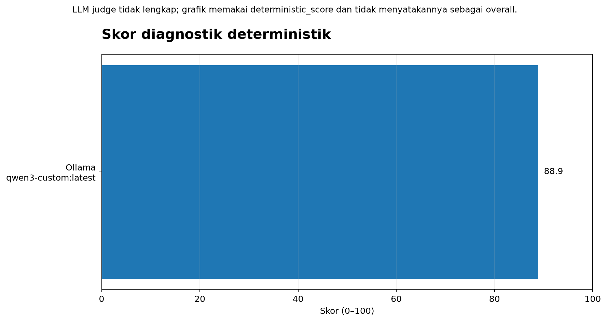
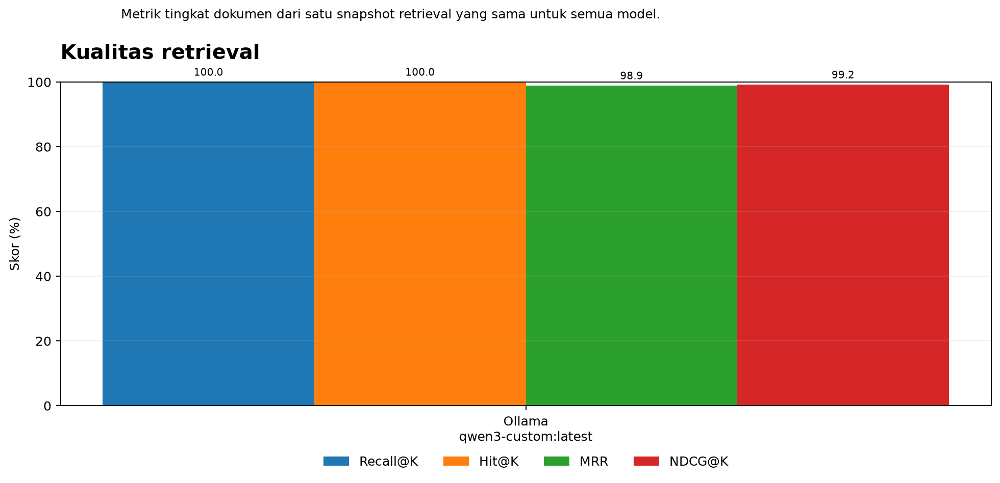
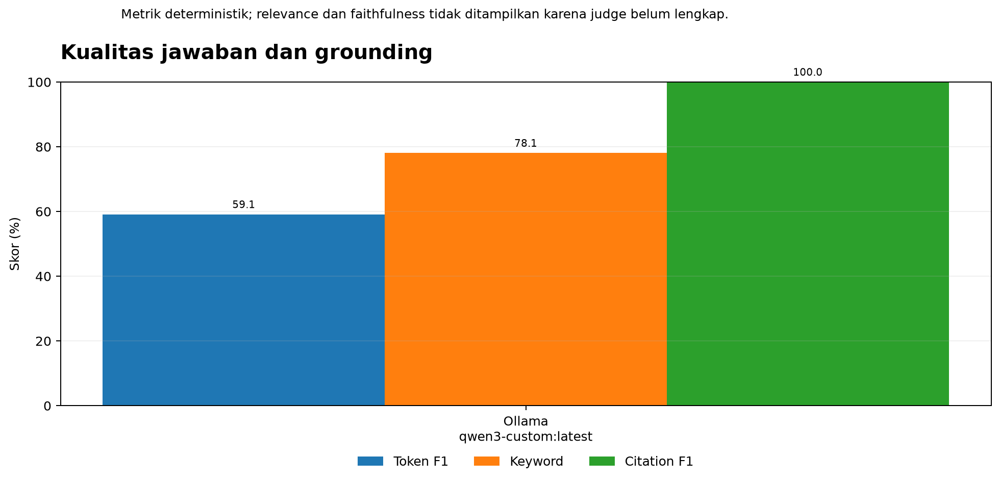
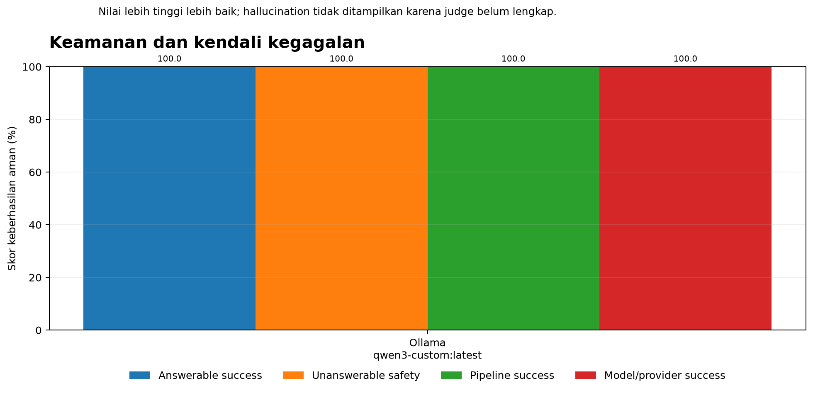
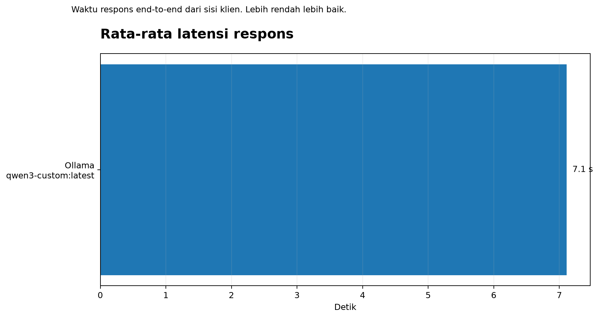
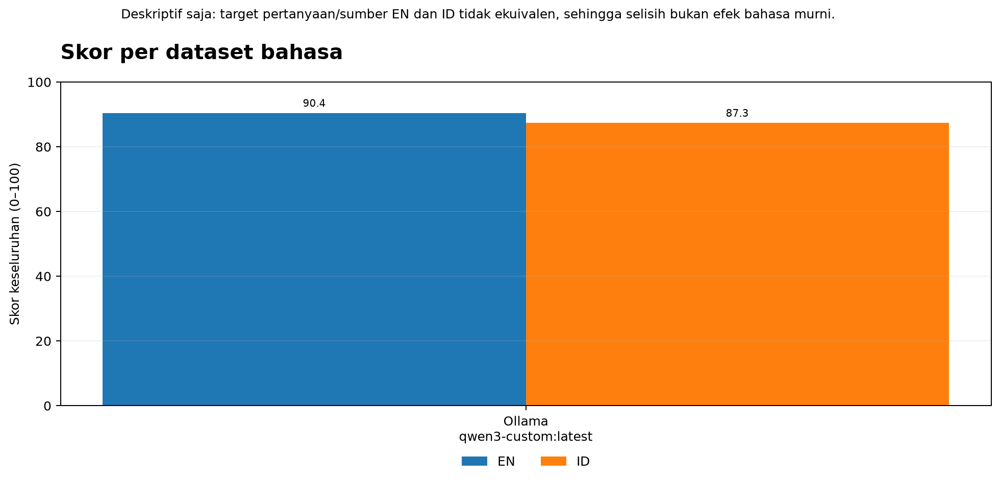

Model evaluated on the bilingual question set with source-locked retrieval evidence.
| Model | Status | Overall | Deterministic | Answer | Grounding | Retrieval | Safety | Avg latency (ms) |
|---|---|---|---|---|---|---|---|---|
| ollama | INCOMPLETE_MISSING_JUDGE | 88.87 | 68.58 | 100.0 | 99.36 | 100.0 | 7113.9012 |





